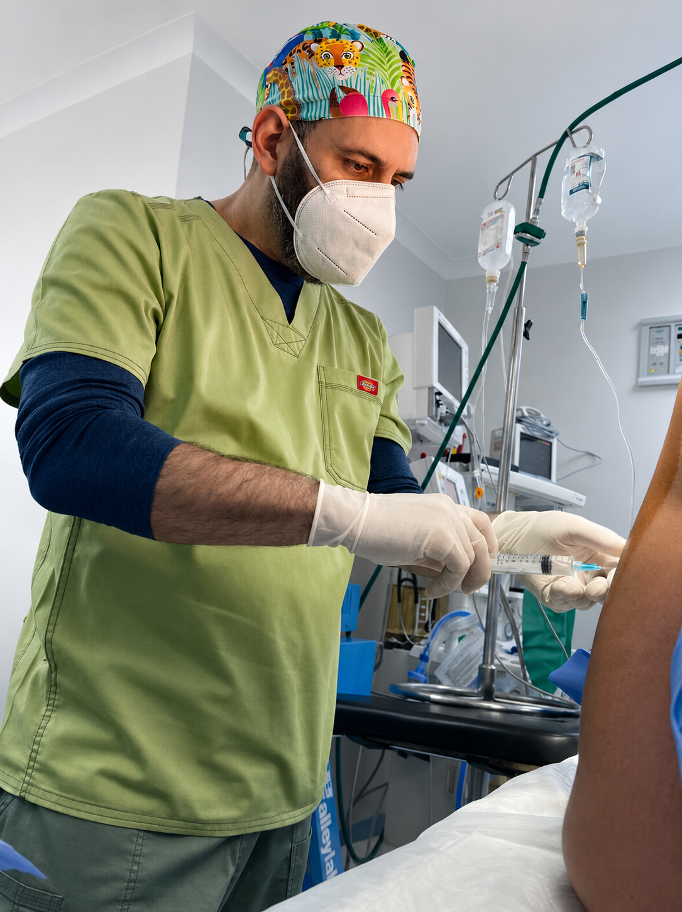
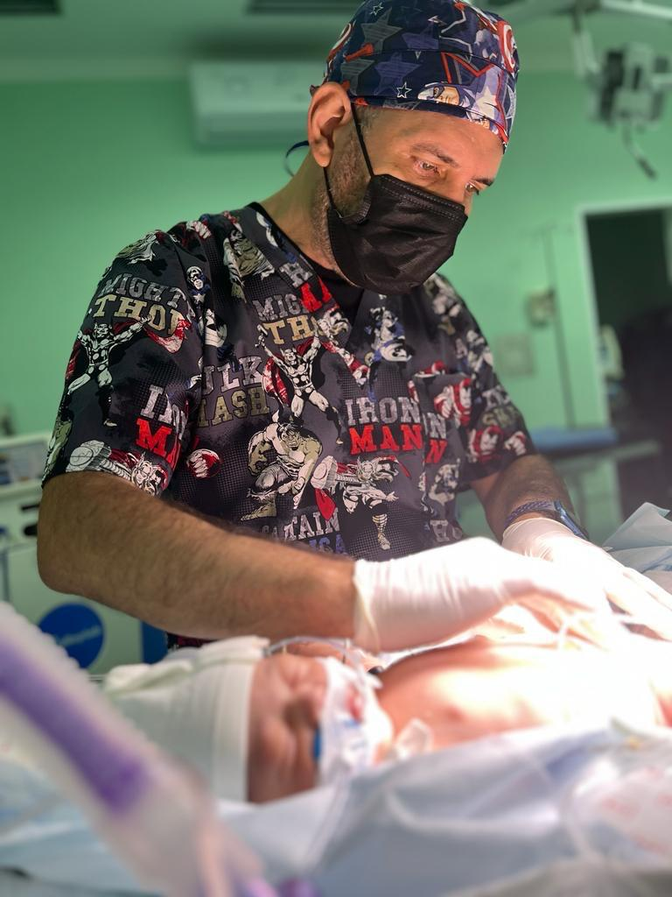
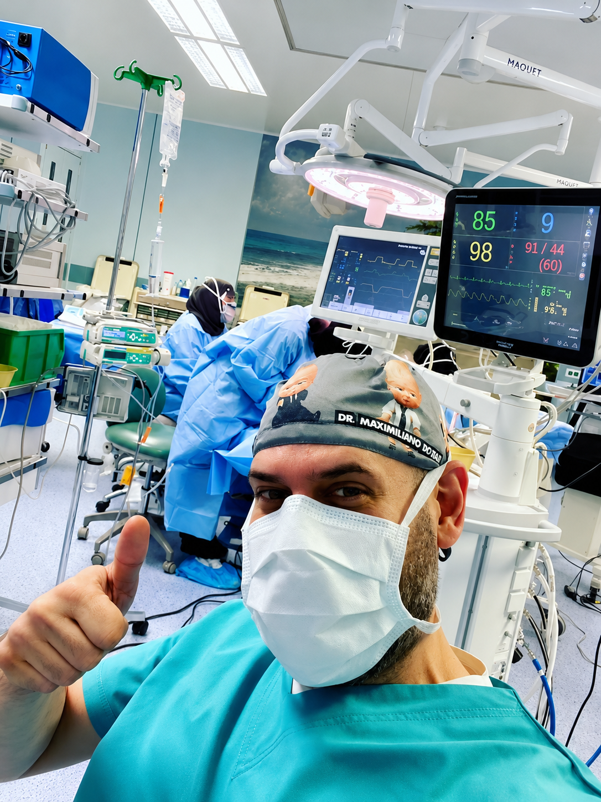

Atención anestésica integral para niños y adultos en Caracas, con los más altos estándares de seguridad, tecnología de vanguardia y calidez humana en cada procedimiento.

Cada plan anestésico es diseñado cuidadosamente según tus necesidades y condición médica, garantizando tu seguridad en todo momento.
Estado de inconsciencia controlada para procedimientos quirúrgicos con monitoreo continuo de signos vitales.
Bloqueo del dolor en áreas específicas del cuerpo para recuperación más rápida y cómoda.
Atención especializada y segura para bebés, niños y adolescentes, adaptada a cada etapa de desarrollo.
Procedimientos diagnósticos o terapéuticos con sedación consciente o profunda según el caso clínico.
Tratamientos personalizados para el control del dolor agudo y crónico, mejorando tu calidad de vida.
Cuidado experto para los más importantes
Entendemos que cada niño es único. Brindamos un ambiente seguro, cálido y especialmente diseñado para reducir el miedo y la ansiedad, garantizando su bienestar en todo momento.

Un proceso claro y transparente, diseñado para que te sientas seguro y tranquilo en cada etapa.
Revisión de tu historia clínica y evaluación preoperatoria personalizada.
Diseñamos el plan más seguro y adecuado para ti y tu procedimiento.
Acompañamiento y monitoreo continuo durante todo el proceso.
Vigilancia en sala de recuperación hasta tu estabilidad completa.
Nos aseguramos de tu bienestar posterior al procedimiento.

Médico anestesiólogo con formación y amplia experiencia en el manejo anestésico para pacientes pediátricos y adultos en una gran variedad de procedimientos quirúrgicos y diagnósticos en Venezuela.
Mi enfoque combina rigor científico con calidez humana — porque detrás de cada procedimiento hay una persona que merece sentirse segura y acompañada.
El Dr. Boada me explicó cada detalle antes de mi procedimiento. Me sentí completamente segura y en buenas manos. La recuperación fue mucho mejor de lo esperado.
Mi hijo de 6 años necesitaba una cirugía y estábamos muy nerviosos. El Dr. Boada y su equipo fueron increíblemente amables y profesionales. Lo recomiendo ampliamente.
Profesionalismo y calidez humana en cada momento. El Dr. Boada respondió todas mis preguntas con paciencia. Sin duda el mejor anestesiólogo de Venezuela.
Estoy aquí para resolver tus dudas y acompañarte en cada paso. Atención en español e inglés.
Asistente virtual · En línea